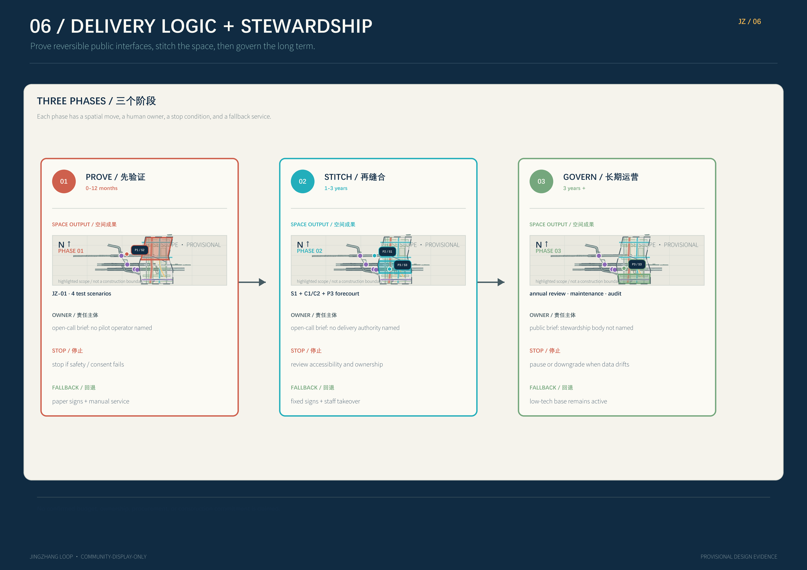

Zhongzhi Park
controlled testing, standards, safety
- test garden · steward desk
- human fallback remains visible
A civic interface network for heritage, innovation, and everyday life - readable, testable, reversible.
Overall map · three-level scope · key areas · land use · mobility · blue-green public space · buildings · renewal · AI scenarios · core metrics · task coverage · self-check · sources · assumptions
The index names the human reading route; the six boards carry the evidence.P1/P2/P3 connect public POI QA to station roles S1/S2/S3. The attributed Esri aerial, named OSM roads, and public places make the urban fabric recognisable; the grey boundary is a provisional design window.
Locate P1/P2/P3 on the public aerial context first, then read S1/S2/S3, one spine, two seams, and the P3 forecourt.

Locate P1/P2/P3 on the public aerial context first, then read S1/S2/S3, one spine, two seams, and the P3 forecourt.
Geometry, metrics, and QA are design evidence for this package; official boundaries, ownership, controls, engineering, and heritage inputs require a full recomputation.
This is a spatial strategy diagram from package geometry, not a statutory zoning map; carriers, nodes, and slow connections are read together.

This is a spatial strategy diagram from package geometry, not a statutory zoning map; carriers, nodes, and slow connections are read together.
Geometry, metrics, and QA are design evidence for this package; official boundaries, ownership, controls, engineering, and heritage inputs require a full recomputation.
Each key area provides a local plan, a street/ground-floor section, and a node experience.

Each key area provides a local plan, a street/ground-floor section, and a node experience.
Geometry, metrics, and QA are design evidence for this package; official boundaries, ownership, controls, engineering, and heritage inputs require a full recomputation.
The key separates OSM public-road context, the coral spine, two cyan seams, the scenario-wing interface, and the P3 forecourt; design lines are not road redlines.

The key separates OSM public-road context, the coral spine, two cyan seams, the scenario-wing interface, and the P3 forecourt; design lines are not road redlines.
Geometry, metrics, and QA are design evidence for this package; official boundaries, ownership, controls, engineering, and heritage inputs require a full recomputation.
Each number carries its source, formula, and status; UNKNOWN marks a control layer not published in the checked public sources.

Each number carries its source, formula, and status; UNKNOWN marks a control layer not published in the checked public sources.
Geometry, metrics, and QA are design evidence for this package; official boundaries, ownership, controls, engineering, and heritage inputs require a full recomputation.
Spatial outputs are tied to time, stewardship, stop conditions, and fallback service.

Spatial outputs are tied to time, stewardship, stop conditions, and fallback service.
Geometry, metrics, and QA are design evidence for this package; official boundaries, ownership, controls, engineering, and heritage inputs require a full recomputation.
The three key areas are not labels: each is a public-ground contract with a section, a node, and a human fallback.
controlled testing, standards, safety
open learning, talent life, explanation
station-city service, guidance, crossing
Known values are derived from the package; unknown values are not filled with invented precision.
The package is formal in structure and ready for review as an open-call submission. It is not government approval, statutory planning, an engineering commitment, or a commercial license.